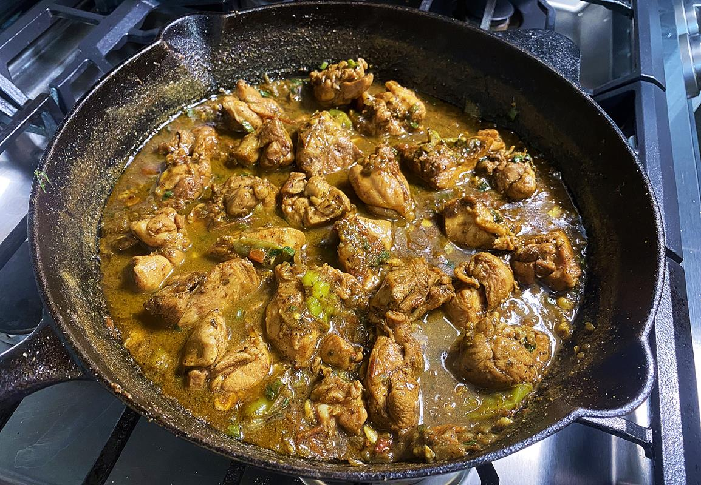

Trinidad Curry Chicken My Way

Description
Indian cusine came to the beautiful island of Trinidad and Tobago as a byproduct of the British bringing Indian indentured servants over after the abolishment of slavery.
Using the natural seasonings / produce of the island and the seasonings / produce brought from India, the people of Trinidad over time created a distinct version of curry chicken.
Ingredients
- 3 lbs boneless chicken
- 2 tablespoons of olive oil
- 8 cloves of garlic
- 1 medium onion
- 1 medium tomato
- Scotch bonnet pepper, quantity to your preference (Hot!)
- 1 teaspoon of ground roasted cumin (geera)
- 1.5 tablespon of green seasoning
- 2 tablespoons of curry powder
- 1 teaspon of anchar masala
- Salt
- Black Pepper
- 2 cups of water
- 2 tablespoons of chopped Shado Beni (cilantro is an alternative if can not find)
Steps
- Cut up chicken into bite size chunks
- Wash the chicken with tap cold water, lemon, vinegar, salt (not optional if you want authentic taste lol)
- Chop up the the garlic, onion, tomato, scotch bonnet pepper(s)
- In a bowl combine the chopped up garlic, onion, tomato, scotch bonnet pepper(s), green seasoning, salt(to preference), black pepper(to preference) and mix up
- Let chicken marinade for atleast 2 hours in fridge but better overnight for maximum flavor
- In a pot heat up the olive oil on medium heat
- Add the curry powder, ground roasted cumin powder, and anchar masala to oil. Stir up in the oil and allow seasoning to grow darker in color but do not burn it. Best to do on medium to medium low heat to make sure not burn the seasoning
- Once the seasoning is cooked up a bit in the oil and start bubbling a little you can add the marinated chicken. Toss up the chicke in the pot to coat all the pieces with the curry seasoning.
- Turn the heat up to medium high, cover pot and allow chicken to spring its own water for about 10 minutes.
- Uncover the pot and toss up the chicken in the pot and allow the water to dry up right the point where there is slight liquid
- Lower stove back to medium heat, add the cups of water, and allow the chicken to cook up for next 15 to 20 minutes.
- The last few minutes before the chicken is done, add the chopped shado beni, and stir the pot
- Enjoy the trini style curry chicken with plain white rice, bread, or even better some roti!
Home